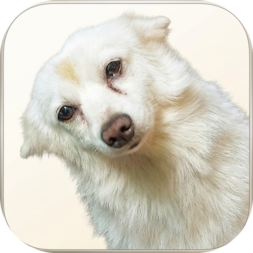

ArduPilot SITL
Link Status
Offline
Firmware
---
Flight Mode
UNKNOWN
Altitude
0.0 m
Airspeed
0.0 m/s
Ground Spd
0.0 m/s
RPM (Cruise)
0
Vehicle Config
QuadPlane (VTOL)
Fixed Wing (Pusher)
Twin Engine (Fixed Wing)
Quadcopter
Y3 Tilt-Rotor
Model Scale
Motor Mapping
Motor 1 (FR)
Motor 2 (BL)
Motor 3 (FL)
Motor 4 (BR)
Tilt Servo (Right)
Tilt Servo (Left)
Cruise
Left Cruise
Right Cruise
M1 (FR Tilt)
M2 (FL Tilt)
M3 (Rear)
Tilt Servo (Right)
Tilt Servo (Left)
Motors
Designed by RJ
Follow
Free
NAV COMPASS
HDG UP
HDG
000
°
TRK
---
°
N
3
6
E
12
15
S
21
24
W
30
33
WIND
5.0 m/s @ 270°
COMPONENTS
HW +0.0 | XW 0.0
DRIFT / CRAB
0.0°
Live Weather & Wind
GPS: 8.3113°N, 77.3077°E
Fetch
Live Open-Meteo Feed
--:--:--
WIND SPEED
5.0
m/s
9.7 kt
WIND DIR
270
°
W
GUSTS
7.5
m/s
14.6 kt
TURBULENCE
0.20
Light
Temp:
--°C
QNH:
-- hPa
Elev:
-- m
Terminal SITL Commands
Copy All
param set SIM_WIND_SPD
5.0
param set SIM_WIND_DIR
270
param set SIM_WIND_TURB
0.20
Custom Wind Adjustment
Reset to Live
Speed
5.0
m/s
Direction
270
°
Turbulence
0.20
Terrain & Flight Profile
AGL: -- m